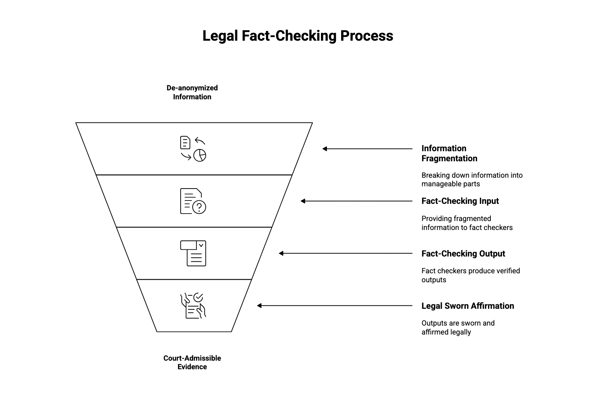
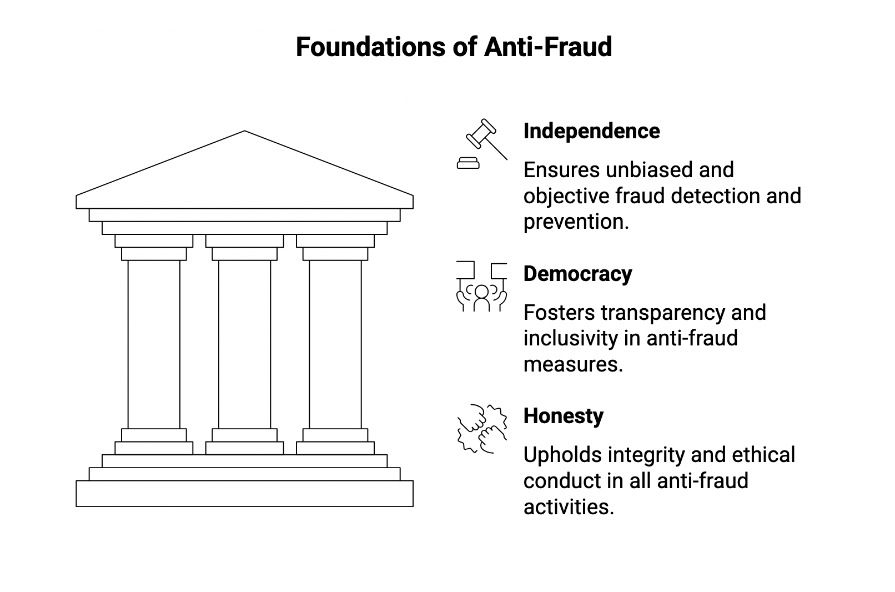
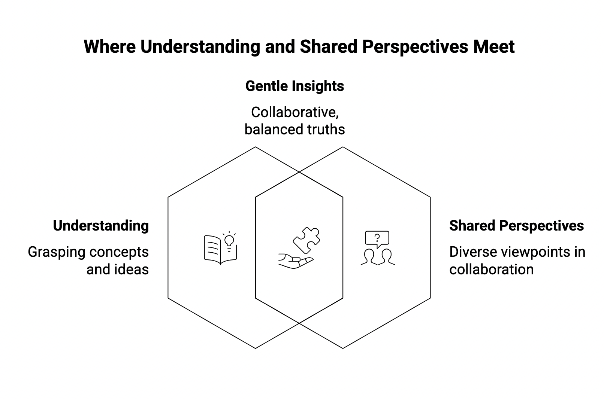
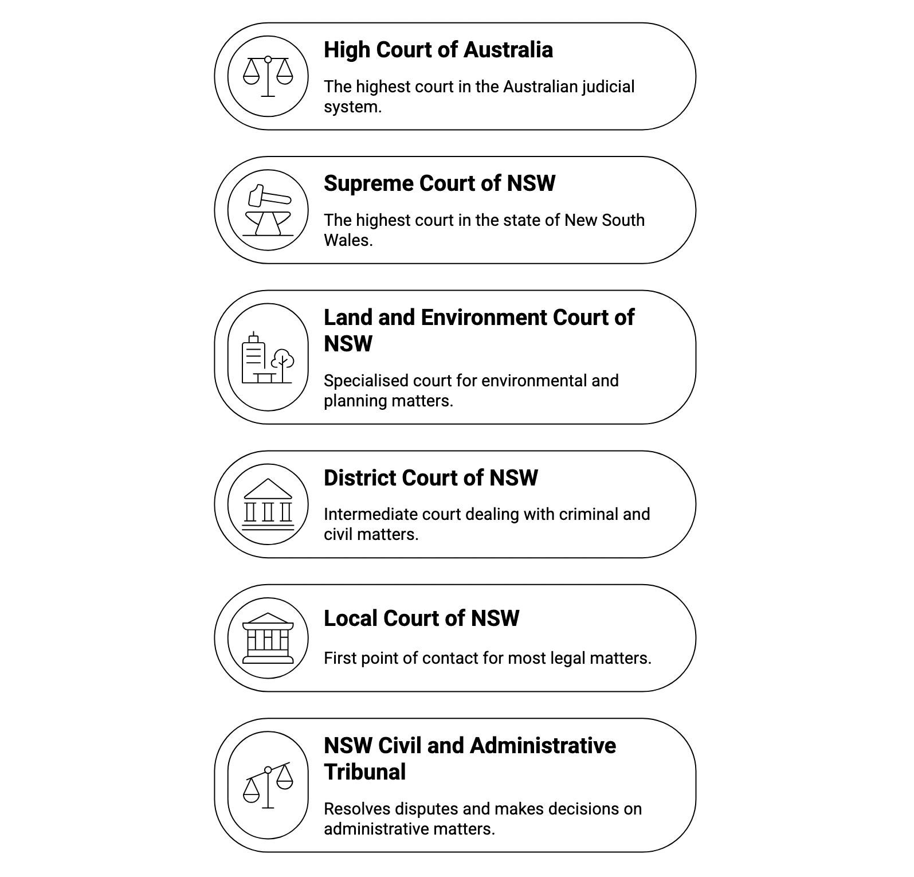

Evidence Act 1995 (Cth) Part 3.3 regulates the legal admissibility of opinion evidence in Australia.
Generally, opinions are not admissible to prove or defend assertions.
76 The opinion rule
(1) Evidence of an opinion is not admissible to prove the existence of a fact about the existence of which
the
opinion was expressed.
(2) Subsection (1) does not apply to evidence of an opinion contained in a certificate or other document
given
or made under regulations made under an Act other than this Act to the extent to which the regulations
provide
that the certificate or other document has evidentiary effect.
...
However,
78 Exception: lay opinions
The opinion rule does not apply to evidence of an opinion expressed by a person if:
(a) the opinion is based on what the person saw, heard or otherwise perceived about a matter or event;
and
(b) evidence of the opinion is necessary to obtain an adequate account or understanding of the
person’s perception of the matter or event.
...
79 Exception: opinions based on specialised knowledge
(1) If a person has specialised knowledge based on the person’s training, study or experience, the opinion
rule does not apply to evidence of an opinion of that person that is wholly or substantially based on that
knowledge.
...
Integrity services include independent fact checking.
Fact checkers are vetted and have passed a known answer test.
Information is de-anonymised and fragmented to then input to the fact checkers. Outputs are then sworn and affirmed in legal format to admit to a court of law.
Anti-fraud processes require independence, democracy and honesty.
In search for truth, collective opinions form implicit objective information.
Courts we service
